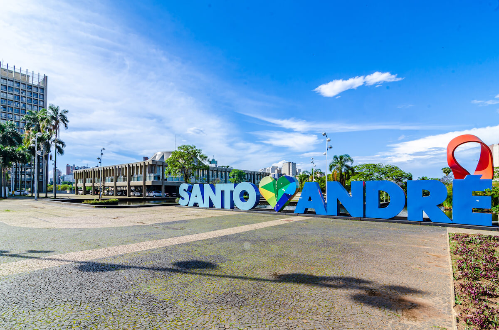

Santo André
Município do ABC Paulista, combina tradição industrial com revitalização cultural, abrindo espaços como o Parque
Central, e também com locais com forte apelo turístico como Paranapiacaba
Pontos Turísticos
- Paranapiacaba (vila ferroviária com clima único e misto de natureza)
- Estádio Bruno José Daniel (futebol local)
- Parque do Pedroso (trilhas e natureza)
- Centro Histórico de Santo André (Igreja Matriz, praças)
